library(dplyr)
library(tidyr)
library(ggplot2)
library(epiR)
library(pROC)
library(psych)
library(pwr)
library(gtsummary)
library(corrplot)
data_path <- if (file.exists("../recueil_bon.csv")) "../recueil_bon.csv" else "recueil_bon.csv"
df <- read.csv(data_path, stringsAsFactors = FALSE, check.names = FALSE)
df$DDN <- as.Date(df$DDN, format = "%Y-%m-%d")
df$Date_de_recueil <- as.Date(df$Date_de_recueil, format = "%Y-%m-%d")
df$Age <- as.numeric(df$Age)
df$Sexe <- factor(c(M = "Masculin", F = "Féminin")[df$Sexe], levels = c("Masculin", "Féminin"))
df$Cote <- factor(c(G = "Gauche", D = "Droite")[df$Cote], levels = c("Gauche", "Droite"))
df$Niveau <- factor(df$Niveau, levels = c("C4", "C5", "C6", "C7", "C8"), ordered = TRUE)
norm_result <- function(x) {
x <- trimws(as.character(x))
x[x %in% c("", "NA", "N/A", "NT")] <- NA
x[x %in% c("Pos", "Positive", "positif", "Positif ")] <- "Positif"
x[x %in% c("Neg", "Negative", "negatif", "négatif", "Negatif ")] <- "Negatif"
x
}
for (v in c("Gold_Standard", "U1_E1", "U2a_E1", "U2b_E1", "U3_E1", "Sc_E1", "U1_E2", "U2a_E2", "U2b_E2", "U3_E2", "Sc_E2")) {
df[[v]] <- norm_result(df[[v]])
}
df$Gold_Standard_Positif_YN <- ifelse(df$Gold_Standard == "Positif", 1, ifelse(df$Gold_Standard %in% c("Negatif", "Douteux"), 0, NA))
df$U1_E1_positif <- as.numeric(df$U1_E1 == "Positif")
df$U2a_E1_positif <- as.numeric(df$U2a_E1 == "Positif")
df$U2b_E1_positif <- as.numeric(df$U2b_E1 == "Positif")
df$U3_E1_positif <- as.numeric(df$U3_E1 == "Positif")
df$Sc_E1_positif <- as.numeric(df$Sc_E1 == "Positif")
df$U1_E2_positif <- as.numeric(df$U1_E2 == "Positif")
df$U2a_E2_positif <- as.numeric(df$U2a_E2 == "Positif")
df$U2b_E2_positif <- as.numeric(df$U2b_E2 == "Positif")
df$U3_E2_positif <- as.numeric(df$U3_E2 == "Positif")
df$Sc_E2_positif <- as.numeric(df$Sc_E2 == "Positif")
# Choix méthodologique principal du rapport:
# tous les Gold_Standard "Douteux" sont interprétés comme "Negatif".
df$Gold_Standard_main <- ifelse(df$Gold_Standard == "Douteux", "Negatif", df$Gold_Standard)
metric_ci <- function(num, den) {
if (is.na(den) || den == 0) return(c(est = NA_real_, low = NA_real_, high = NA_real_))
bt <- binom.test(num, den)
c(est = num / den, low = bt$conf.int[1], high = bt$conf.int[2])
}
lr_ci <- function(tp, fp, fn, tn) {
a <- tp; b <- fp; c <- fn; d <- tn
lrp <- if ((1 - d / (b + d)) == 0) Inf else (a / (a + c)) / (1 - d / (b + d))
lrn <- if ((d / (b + d)) == 0) Inf else (1 - a / (a + c)) / (d / (b + d))
if (any(c(a, b, c, d) == 0)) {
a <- a + 0.5; b <- b + 0.5; c <- c + 0.5; d <- d + 0.5
}
se_log_lrp <- sqrt((1 / a) - (1 / (a + c)) + (1 / b) - (1 / (b + d)))
se_log_lrn <- sqrt((1 / c) - (1 / (a + c)) + (1 / d) - (1 / (b + d)))
lrp_adj <- (a / (a + c)) / (1 - d / (b + d))
lrn_adj <- (1 - a / (a + c)) / (d / (b + d))
ci_lrp <- exp(log(lrp_adj) + c(-1, 1) * 1.96 * se_log_lrp)
ci_lrn <- exp(log(lrn_adj) + c(-1, 1) * 1.96 * se_log_lrn)
list(
lrp = c(est = lrp, low = ci_lrp[1], high = ci_lrp[2]),
lrn = c(est = lrn, low = ci_lrn[1], high = ci_lrn[2])
)
}
diag_metrics <- function(test, gold, label, doubtful_negative = FALSE) {
gold2 <- gold
if (doubtful_negative) gold2[gold2 == "Douteux"] <- "Negatif"
keep <- !is.na(test) & !is.na(gold2) & gold2 %in% c("Positif", "Negatif")
test2 <- test[keep]
gold2 <- gold2[keep]
tp <- sum(test2 == "Positif" & gold2 == "Positif")
fn <- sum(test2 == "Negatif" & gold2 == "Positif")
fp <- sum(test2 == "Positif" & gold2 == "Negatif")
tn <- sum(test2 == "Negatif" & gold2 == "Negatif")
se <- metric_ci(tp, tp + fn)
sp <- metric_ci(tn, tn + fp)
ppv <- metric_ci(tp, tp + fp)
npv <- metric_ci(tn, tn + fn)
lr <- lr_ci(tp, fp, fn, tn)
roc_obj <- roc(as.numeric(gold2 == "Positif"), as.numeric(test2 == "Positif"), quiet = TRUE)
auc_ci <- ci.auc(roc_obj)
data.frame(
Test = label,
N = length(test2),
TP = tp,
FN = fn,
FP = fp,
TN = tn,
Se = unname(se["est"]),
Se_low = unname(se["low"]),
Se_high = unname(se["high"]),
Sp = unname(sp["est"]),
Sp_low = unname(sp["low"]),
Sp_high = unname(sp["high"]),
VPP = unname(ppv["est"]),
VPP_low = unname(ppv["low"]),
VPP_high = unname(ppv["high"]),
VPN = unname(npv["est"]),
VPN_low = unname(npv["low"]),
VPN_high = unname(npv["high"]),
LRp = unname(lr$lrp["est"]),
LRp_low = unname(lr$lrp["low"]),
LRp_high = unname(lr$lrp["high"]),
LRn = unname(lr$lrn["est"]),
LRn_low = unname(lr$lrn["low"]),
LRn_high = unname(lr$lrn["high"]),
Youden = unname(se["est"] + sp["est"] - 1),
AUC = as.numeric(auc(roc_obj)),
AUC_low = as.numeric(auc_ci[1]),
AUC_high = as.numeric(auc_ci[3]),
Fisher_p = fisher.test(table(test2, gold2))$p.value,
stringsAsFactors = FALSE
)
}
combo_metrics <- function(n_pos, gold, threshold, doubtful_negative = FALSE) {
test <- ifelse(n_pos >= threshold, "Positif", "Negatif")
diag_metrics(test, gold, paste0(">=", threshold, " positifs"), doubtful_negative = doubtful_negative)
}
kappa_summary <- function(a, b, label) {
keep <- !is.na(a) & !is.na(b)
k <- psych::cohen.kappa(cbind(a[keep], b[keep]))
agree <- mean(a[keep] == b[keep])
data.frame(
Test = label,
N = sum(keep),
Accord = agree,
Kappa = k$kappa,
Kappa_low = k$confid["unweighted kappa", "lower"],
Kappa_high = k$confid["unweighted kappa", "upper"],
Interpretation = case_when(
k$kappa < 0.20 ~ "faible",
k$kappa < 0.40 ~ "passable",
k$kappa < 0.60 ~ "moderee",
k$kappa < 0.80 ~ "substantielle",
TRUE ~ "presque parfaite"
),
stringsAsFactors = FALSE
)
}
fmt_num <- function(x, digits = 3) ifelse(is.infinite(x), "Inf", format(round(x, digits), nsmall = digits, trim = TRUE))
gold_counts <- table(df$Gold_Standard, useNA = "ifany")
gold_main_counts <- table(df$Gold_Standard_main, useNA = "ifany")
sexe_counts <- table(df$Sexe, useNA = "ifany")
cote_counts <- table(df$Cote, useNA = "ifany")
niveau_counts <- table(df$Niveau, useNA = "ifany")
primary_n <- sum(df$Gold_Standard_main %in% c("Positif", "Negatif"), na.rm = TRUE)
primary_prev <- metric_ci(sum(df$Gold_Standard_main == "Positif", na.rm = TRUE), primary_n)
diag_primary <- bind_rows(
diag_metrics(df$U1_E1, df$Gold_Standard_main, "U1", doubtful_negative = FALSE),
diag_metrics(df$U2a_E1, df$Gold_Standard_main, "U2a", doubtful_negative = FALSE),
diag_metrics(df$U2b_E1, df$Gold_Standard_main, "U2b", doubtful_negative = FALSE),
diag_metrics(df$U3_E1, df$Gold_Standard_main, "U3", doubtful_negative = FALSE),
diag_metrics(df$Sc_E1, df$Gold_Standard_main, "Scratch", doubtful_negative = FALSE)
)
diag_sensitivity <- bind_rows(
diag_metrics(df$U1_E1, df$Gold_Standard, "U1", doubtful_negative = FALSE),
diag_metrics(df$U2a_E1, df$Gold_Standard, "U2a", doubtful_negative = FALSE),
diag_metrics(df$U2b_E1, df$Gold_Standard, "U2b", doubtful_negative = FALSE),
diag_metrics(df$U3_E1, df$Gold_Standard, "U3", doubtful_negative = FALSE),
diag_metrics(df$Sc_E1, df$Gold_Standard, "Scratch", doubtful_negative = FALSE)
)
diag_primary_round <- diag_primary %>%
transmute(
Test, N, TP, FN, FP, TN,
Se = round(Se, 3), Sp = round(Sp, 3), VPP = round(VPP, 3), VPN = round(VPN, 3),
`LR+` = round(LRp, 2), `LR-` = round(LRn, 2),
Youden = round(Youden, 3), AUC = round(AUC, 3), `p Fisher` = signif(Fisher_p, 3)
)
diag_sensitivity_round <- diag_sensitivity %>%
transmute(
Test, N,
Se = round(Se, 3), Sp = round(Sp, 3), VPP = round(VPP, 3), VPN = round(VPN, 3),
`LR+` = ifelse(is.infinite(LRp), Inf, round(LRp, 2)),
`LR-` = round(LRn, 2), Youden = round(Youden, 3), AUC = round(AUC, 3)
)
contingency_tab <- diag_primary %>%
transmute(Test, TP, FN, FP, TN, N)
diag_compare <- bind_rows(
diag_primary %>% mutate(Analyse = "Principale"),
diag_sensitivity %>% mutate(Analyse = "Sensibilite")
) %>%
select(Test, Analyse, Se, Sp, VPP, VPN, LRp, LRn, Youden) %>%
pivot_longer(cols = c(Se, Sp, VPP, VPN, LRp, LRn, Youden), names_to = "Mesure", values_to = "Valeur")
best_sens <- diag_primary %>% arrange(desc(Se), LRn) %>% slice(1)
best_spec <- diag_primary %>% arrange(desc(Sp), desc(LRp)) %>% slice(1)
best_youden <- diag_primary %>% arrange(desc(Youden)) %>% slice(1)
df$n_pos <- df$U1_E1_positif + df$U2a_E1_positif + df$U2b_E1_positif + df$U3_E1_positif
combo_primary <- bind_rows(
combo_metrics(df$n_pos, df$Gold_Standard_main, 1, doubtful_negative = FALSE),
combo_metrics(df$n_pos, df$Gold_Standard_main, 2, doubtful_negative = FALSE),
combo_metrics(df$n_pos, df$Gold_Standard_main, 3, doubtful_negative = FALSE),
combo_metrics(df$n_pos, df$Gold_Standard_main, 4, doubtful_negative = FALSE)
)
combo_round <- combo_primary %>%
transmute(
Seuil = Test, N,
Se = round(Se, 3), Sp = round(Sp, 3), VPP = round(VPP, 3), VPN = round(VPN, 3),
`LR+` = round(LRp, 2), `LR-` = round(LRn, 2), Youden = round(Youden, 3), AUC = round(AUC, 3)
)
best_combo_screen <- combo_primary %>% arrange(desc(Se), LRn) %>% slice(1)
best_combo_balance <- combo_primary %>% arrange(desc(Youden)) %>% slice(1)
niv <- df %>%
select(Niveau, U1_E1, U2a_E1, U2b_E1, U3_E1, Sc_E1) %>%
pivot_longer(cols = -Niveau, names_to = "Test", values_to = "Resultat") %>%
group_by(Niveau, Test) %>%
summarise(
N = sum(!is.na(Resultat)),
Positifs = sum(Resultat == "Positif", na.rm = TRUE),
Taux = mean(Resultat == "Positif", na.rm = TRUE),
.groups = "drop"
)
niv_valid <- niv %>% filter(!is.na(Niveau))
kappa_tab <- bind_rows(
kappa_summary(df$U1_E1, df$U1_E2, "U1"),
kappa_summary(df$U2a_E1, df$U2a_E2, "U2a"),
kappa_summary(df$U2b_E1, df$U2b_E2, "U2b"),
kappa_summary(df$U3_E1, df$U3_E2, "U3"),
kappa_summary(df$Sc_E1, df$Sc_E2, "Scratch")
)
kappa_round <- kappa_tab %>%
transmute(
Test, N, Accord = round(Accord, 3), Kappa = round(Kappa, 3),
`IC95% bas` = round(Kappa_low, 3), `IC95% haut` = round(Kappa_high, 3),
Interpretation
)
roc_objects <- list(
U1 = roc(as.numeric(df$Gold_Standard_main %in% "Positif"), as.numeric(df$U1_E1 == "Positif"), subset = df$Gold_Standard_main %in% c("Positif", "Negatif") & !is.na(df$U1_E1), quiet = TRUE),
U2a = roc(as.numeric(df$Gold_Standard_main %in% "Positif"), as.numeric(df$U2a_E1 == "Positif"), subset = df$Gold_Standard_main %in% c("Positif", "Negatif") & !is.na(df$U2a_E1), quiet = TRUE),
U2b = roc(as.numeric(df$Gold_Standard_main %in% "Positif"), as.numeric(df$U2b_E1 == "Positif"), subset = df$Gold_Standard_main %in% c("Positif", "Negatif") & !is.na(df$U2b_E1), quiet = TRUE),
U3 = roc(as.numeric(df$Gold_Standard_main %in% "Positif"), as.numeric(df$U3_E1 == "Positif"), subset = df$Gold_Standard_main %in% c("Positif", "Negatif") & !is.na(df$U3_E1), quiet = TRUE),
Scratch = roc(as.numeric(df$Gold_Standard_main %in% "Positif"), as.numeric(df$Sc_E1 == "Positif"), subset = df$Gold_Standard_main %in% c("Positif", "Negatif") & !is.na(df$Sc_E1), quiet = TRUE)
)
auc_tab <- diag_primary %>%
transmute(Test, AUC = round(AUC, 3), `IC95% bas` = round(AUC_low, 3), `IC95% haut` = round(AUC_high, 3)) %>%
arrange(desc(AUC))
auc_best_test <- auc_tab$Test[1]
auc_best_value <- auc_tab$AUC[1]
auc_best_low <- auc_tab$`IC95% bas`[1]
auc_best_high <- auc_tab$`IC95% haut`[1]
mat <- df %>%
transmute(
U1 = as.numeric(U1_E1 == "Positif"),
U2a = as.numeric(U2a_E1 == "Positif"),
U2b = as.numeric(U2b_E1 == "Positif"),
U3 = as.numeric(U3_E1 == "Positif"),
Scratch = as.numeric(Sc_E1 == "Positif"),
Gold = ifelse(Gold_Standard_main == "Positif", 1, ifelse(Gold_Standard_main == "Negatif", 0, NA))
)
cor_mat <- cor(mat, use = "pairwise.complete.obs")
post_test <- diag_primary %>%
transmute(
Test,
`Probabilite de NCB si test positif` = round(VPP, 3),
`Probabilite de NCB si test negatif` = round(1 - VPN, 3)
)
post_test_long <- diag_primary %>%
transmute(
Test,
`Post-test positif` = VPP,
`Post-test negatif` = 1 - VPN
) %>%
pivot_longer(cols = c(`Post-test positif`, `Post-test negatif`), names_to = "Situation", values_to = "Probabilite")
pretest_prev_value <- as.numeric(primary_prev["est"])
nnt_exploratory <- diag_primary %>%
transmute(
Test,
Pretest = pretest_prev_value,
VPP,
ARR_exploratoire = VPP - Pretest,
NNT_exploratoire = ifelse(ARR_exploratoire > 0, 1 / ARR_exploratoire, NA_real_)
)
cp_lower_expected <- function(n_neg, spec, alpha = 0.05) {
qbeta(alpha, n_neg * spec, n_neg * (1 - spec) + 1)
}
required_negatives_cp <- function(spec, width, alpha = 0.05, max_n = 5000) {
for (n_neg in 2:max_n) {
lower <- cp_lower_expected(n_neg, spec, alpha = alpha)
if ((spec - lower) <= width) return(n_neg)
}
NA_integer_
}
sample_size_scenarios_input <- data.frame(
Scenario = paste0("S", 1:11),
Specificite_cible = c(0.90, 0.90, 0.90, 0.90, 0.90, 0.90, 0.85, 0.85, 0.85, 0.85, 0.85),
Prevalence = c(0.75, 0.50, 0.75, 0.50, 0.60, 0.60, 0.75, 0.50, 0.75, 0.60, 0.50),
Largeur_IC = c(0.099, 0.099, 0.149, 0.149, 0.099, 0.149, 0.099, 0.099, 0.149, 0.099, 0.149)
)
sample_size_scenarios <- sample_size_scenarios_input %>%
rowwise() %>%
mutate(
N_negatifs_requis = required_negatives_cp(Specificite_cible, Largeur_IC),
Borne_inferieure = cp_lower_expected(N_negatifs_requis, Specificite_cible),
Largeur_calculee = Specificite_cible - Borne_inferieure,
N_requis = ceiling(N_negatifs_requis / (1 - Prevalence))
) %>%
ungroup() %>%
mutate(
Specificite_label = paste0("Sp cible ", fmt_num(Specificite_cible, 2)),
Largeur_label = ifelse(Largeur_IC < 0.12, "IC etroit (~0.10)", "IC plus large (~0.15)")
)
power_scenarios <- expand.grid(
Specificite_attendue = c(0.85, 0.90),
Specificite_nulle = c(0.60, 0.75),
Puissance = c(0.80, 0.90)
) %>%
mutate(
Effet_h = mapply(ES.h, Specificite_attendue, Specificite_nulle),
n_par_groupe = ceiling(mapply(function(h, power) pwr.2p.test(h = h, sig.level = 0.05, power = power, alternative = "two.sided")$n, Effet_h, Puissance)),
Contraste = paste0("Sp ", fmt_num(Specificite_attendue, 2), " vs ", fmt_num(Specificite_nulle, 2))
)
h1 <- ES.h(0.90, 0.75)
h2 <- ES.h(0.85, 0.60)
power_1 <- pwr.2p.test(h = h1, sig.level = 0.05, power = 0.80, alternative = "two.sided")
power_2 <- pwr.2p.test(h = h2, sig.level = 0.05, power = 0.80, alternative = "two.sided")
power_tab <- data.frame(
Hypothese = c("Sp 0.90 vs 0.75", "Sp 0.85 vs 0.60"),
`n par groupe requis` = c(ceiling(power_1$n), ceiling(power_2$n))
)
power_n1 <- power_tab$`n par groupe requis`[1]
power_n2 <- power_tab$`n par groupe requis`[2]
validity_tab <- data.frame(
Point = c(
"Population d'analyse principale",
"Gestion des Gold_Standard douteux",
"Scratch test",
"Analyse par niveau metamerique",
"ROC",
"NNT",
"Puissance"
),
Constat = c(
paste0(primary_n, " dossiers avec gold standard binaire interpretable sur 54"),
"3 dossiers Douteux: tous recodes Negatif dans l'analyse principale et annonces explicitement comme tels",
paste0(sum(is.na(df$Sc_E1)), " valeurs manquantes/NT pour E1"),
paste0(sum(is.na(df$Niveau)), " niveaux manquants; C4, C5 et C7 n=1 chacun"),
"Predicteurs binaires: l'AUC est descriptive et redondante avec Se/Sp",
"Indicateur exploratoire non standard en diagnostique, a presenter separement du noyau principal",
"Section conservee comme aide de planification, pas comme validation post hoc"
),
stringsAsFactors = FALSE
)Analyse statistique ultra complète - version_codex
1 Préambule
Ce document reprend la logique du these_brieuc.qmd initial, en conservant le même début de préparation des données (df, Sexe, Cote, Niveau, Gold_Standard_Positif_YN, U1_E1_positif, etc.), puis en ajoutant une passe complète d’extraction des résultats et de contrôle de validité statistique.
Cadre d’interprétation. L’objectif principal est la performance diagnostique des ULNT et du Scratch Collapse Test vis-à-vis du gold standard. Les objectifs secondaires sont l’étude des combinaisons de tests, la reproductibilité inter-observateur et l’évaluation critique de la robustesse statistique du document.
2 Description initiale des données
df %>%
select(Age, Sexe, Cote, Niveau, Gold_Standard, U1_E1, U2a_E1, U2b_E1, U3_E1, Sc_E1) %>%
tbl_summary(missing = "no")| Characteristic | N = 541 |
|---|---|
| Age | 51 (42, 59) |
| Sexe | |
| Masculin | 19 (35%) |
| Féminin | 35 (65%) |
| Cote | |
| Gauche | 25 (54%) |
| Droite | 21 (46%) |
| Niveau | |
| C4 | 1 (4.2%) |
| C5 | 1 (4.2%) |
| C6 | 13 (54%) |
| C7 | 1 (4.2%) |
| C8 | 8 (33%) |
| Gold_Standard | |
| Douteux | 3 (5.7%) |
| Negatif | 14 (26%) |
| Positif | 36 (68%) |
| U1_E1 | |
| Negatif | 14 (26%) |
| Positif | 40 (74%) |
| U2a_E1 | |
| Negatif | 16 (30%) |
| Positif | 38 (70%) |
| U2b_E1 | |
| Negatif | 19 (35%) |
| Positif | 35 (65%) |
| U3_E1 | |
| Negatif | 33 (61%) |
| Positif | 21 (39%) |
| Sc_E1 | |
| Negatif | 41 (80%) |
| Positif | 10 (20%) |
| 1 Median (Q1, Q3); n (%) | |
L’échantillon total comprend 54 dossiers. Le gold standard est positif dans 36 cas, négatif dans 14 cas, douteux dans 3 cas et manquant dans NA cas.
L’analyse diagnostique principale repose donc sur 53 dossiers avec gold standard binaire interprétable, avec une prévalence de NCB de 67.9% [53.7 ; 80.1].
Sur le plan descriptif, la cohorte comporte 35 femmes et 19 hommes. La latéralité est manquante dans NA cas et le niveau métamérique est manquant dans NA cas, ce qui affaiblit d’emblée toute interprétation fine par niveau.
data.frame(
Variable = c("Gold standard interpretable", "Gold standard douteux", "Gold standard manquant", "Cote manquante", "Niveau manquant"),
N = c(primary_n, sum(df$Gold_Standard == "Douteux", na.rm = TRUE), sum(is.na(df$Gold_Standard)), sum(is.na(df$Cote)), sum(is.na(df$Niveau)))
) Variable N
1 Gold standard interpretable 53
2 Gold standard douteux 3
3 Gold standard manquant 1
4 Cote manquante 8
5 Niveau manquant 30Interprétation statistique. Le premier point de validité est la gestion des Douteux: dans ce rapport, ils sont tous reclassés comme négatifs et cette convention est appliquée de façon homogène. Une analyse de sensibilité plus restrictive, fondée sur leur exclusion, est fournie pour vérifier que le message global ne dépend pas entièrement de ce choix.
ggplot(filter(df, !is.na(Age)), aes(Age)) + geom_histogram(bins = 15, fill = "#4c78a8", color = "white") + theme_minimal() + labs(title = "Âge")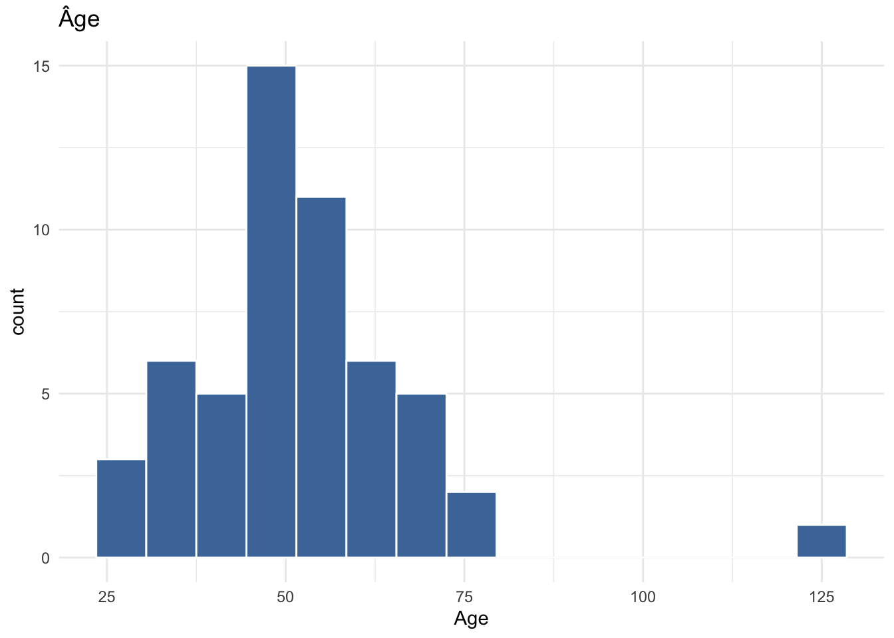
ggplot(filter(df, !is.na(Cote)), aes(x = Cote, fill = Cote)) + geom_bar() + theme_minimal() + labs(title = "Latéralité")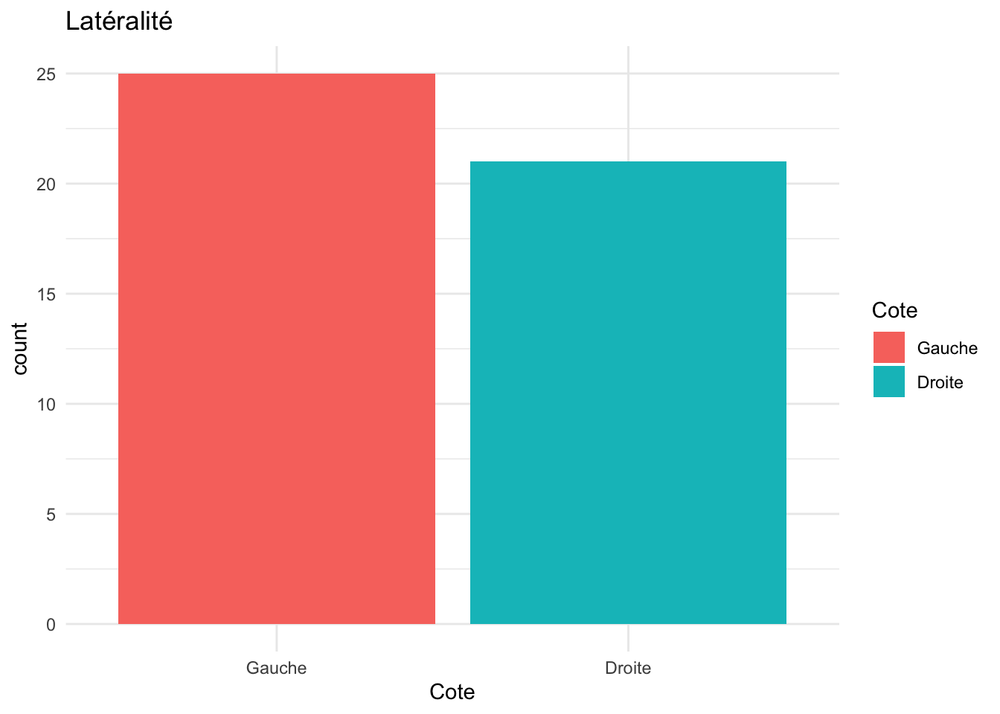
ggplot(filter(df, !is.na(Niveau)), aes(x = Niveau, fill = Niveau)) + geom_bar() + theme_minimal() + labs(title = "Niveau métamérique")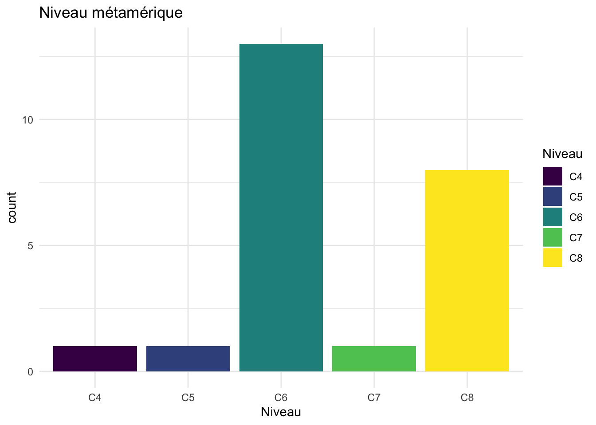
ggplot(filter(df, !is.na(Sexe)), aes(x = Sexe, fill = Sexe)) + geom_bar() + theme_minimal() + labs(title = "Sexe")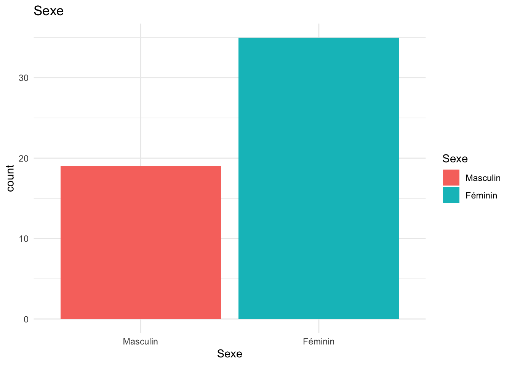
L’âge moyen est de 52.6 ans (ET 15.9, médiane 51.0). La distribution des niveaux métamériques est trop incomplète pour soutenir une conclusion forte, car plus de la moitié des dossiers n’ont pas de niveau renseigné.
3 Méthodes
Les analyses ont été réalisées sous R (R Foundation for Statistical Computing, Vienne, Autriche) à partir du fichier recueil_bon.csv, après harmonisation des modalités textuelles et recodage des variables cliniques en indicateurs binaires lorsque nécessaire. Conformément au choix méthodologique retenu pour ce rapport, tous les cas de gold standard “Douteux” ont été reclassés comme “Négatif” et cette règle a été appliquée de façon homogène à l’ensemble des analyses principales. Les variables démographiques et cliniques ont d’abord été décrites par des statistiques descriptives adaptées à leur nature. Les performances diagnostiques des tests U1, U2a, U2b, U3 et Scratch Collapse Test ont ensuite été évaluées par construction des tableaux de contingence 2x2, avec estimation des effectifs TP, FP, FN et TN, de la sensibilité, de la spécificité, des valeurs prédictives positive et négative, des rapports de vraisemblance positif et négatif, de l’indice de Youden et de leurs intervalles de confiance exacts à 95% lorsque pertinent. Les combinaisons de tests ULNT ont été étudiées selon plusieurs seuils de positivité (>=1, >=2, >=3 et 4/4 tests positifs). La reproductibilité inter-observateur entre évaluateurs 1 et 2 a été quantifiée par le coefficient kappa de Cohen avec intervalle de confiance. Les courbes ROC et les aires sous la courbe ont été calculées à titre de résumé descriptif complémentaire, tout en considérant que la nature binaire des prédicteurs limite leur apport par rapport aux indices diagnostiques classiques. Les résultats sont présentés dans l’ordre suivant, comme dans un manuscrit scientifique: description de la population et préparation des données, justification de l’effectif, performances diagnostiques avec tableaux de contingence, précision des estimations, analyses de sensibilité, combinaisons de tests, analyses descriptives complémentaires (niveaux métamériques, corrélations, reproductibilité), probabilités post-test et enfin discussion critique de la validité statistique.
4 Justification de l’effectif
Les captures transmises documentent un calcul de taille d’échantillon centré sur la précision de la spécificité par intervalle de confiance exact de Clopper-Pearson. Ici, les scénarios ne sont pas seulement recopiés: ils sont recalculés dans R à partir d’une borne inférieure unilatérale exacte à 95%, en recherchant le plus petit nombre de sujets négatifs permettant d’obtenir une largeur cible ω telle que:
[ = t - L_{95%, exact} ]
où t est la spécificité cible et L la borne inférieure exacte de Clopper-Pearson. En pratique, ω n’est pas la largeur totale d’un intervalle bilatéral: c’est la marge de sécurité vers le bas, c’est-à-dire l’écart maximal toléré entre la spécificité visée et sa borne inférieure. Par exemple, si l’on vise une spécificité de 0,90 avec ω = 0,10, on veut garantir que la borne inférieure de l’IC exact reste autour de 0,80 ou plus. Plus ω est petit, plus on exige une estimation précise, donc plus l’effectif nécessaire augmente.
L’effectif total requis est ensuite obtenu en tenant compte de la prévalence attendue:
[ N_{total} = ]
Cette logique est celle de l’image fournie.
sample_size_scenarios# A tibble: 11 × 10
Scenario Specificite_cible Prevalence Largeur_IC N_negatifs_requis
<chr> <dbl> <dbl> <dbl> <int>
1 S1 0.9 0.75 0.099 50
2 S2 0.9 0.5 0.099 50
3 S3 0.9 0.75 0.149 27
4 S4 0.9 0.5 0.149 27
5 S5 0.9 0.6 0.099 50
6 S6 0.9 0.6 0.149 27
7 S7 0.85 0.75 0.099 59
8 S8 0.85 0.5 0.099 59
9 S9 0.85 0.75 0.149 31
10 S10 0.85 0.6 0.099 59
11 S11 0.85 0.5 0.149 31
# ℹ 5 more variables: Borne_inferieure <dbl>, Largeur_calculee <dbl>,
# N_requis <dbl>, Specificite_label <chr>, Largeur_label <chr>ggplot(sample_size_scenarios, aes(x = Scenario, y = N_requis, fill = Specificite_label)) +
geom_col() +
geom_hline(yintercept = primary_n, linetype = 2, color = "firebrick") +
facet_wrap(~ Largeur_label) +
theme_minimal() +
labs(
title = "Effectif requis selon les scénarios de précision de la spécificité",
subtitle = paste0("Ligne pointillée: effectif principal observé (n=", primary_n, ")"),
x = "Scénario",
y = "Effectif requis"
)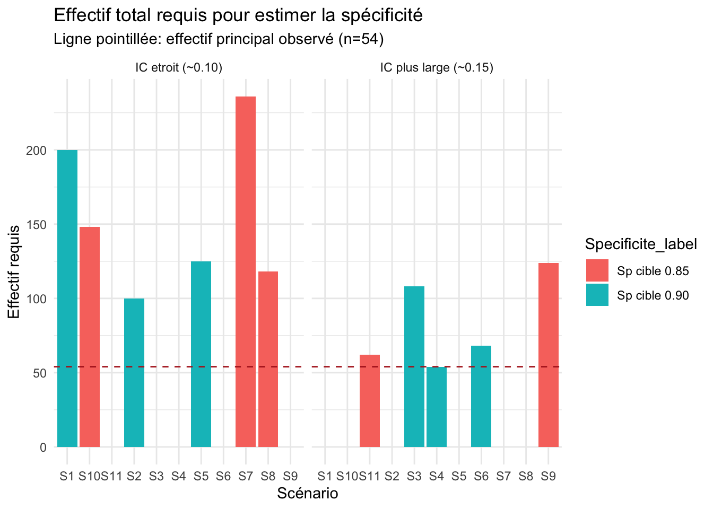
ggplot(sample_size_scenarios, aes(x = Prevalence, y = N_requis, color = Specificite_label, shape = Largeur_label)) +
geom_point(size = 3) +
geom_line(aes(group = interaction(Specificite_label, Largeur_label))) +
geom_hline(yintercept = primary_n, linetype = 2, color = "firebrick") +
theme_minimal() +
labs(
title = "Impact de la prévalence attendue sur l’effectif requis",
x = "Prévalence attendue",
y = "Effectif requis"
)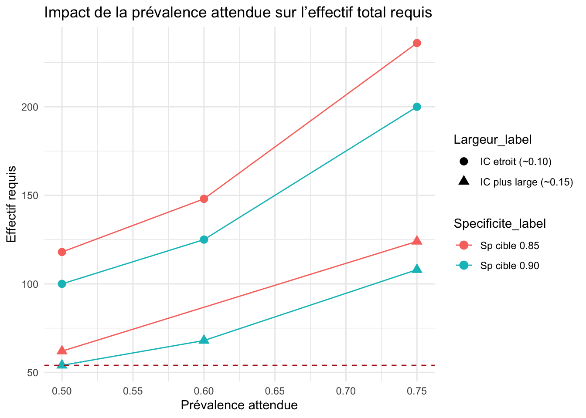
ggplot(sample_size_scenarios, aes(x = Scenario, y = Largeur_calculee, color = Specificite_label, group = Specificite_label)) +
geom_point(size = 3) +
geom_line() +
geom_hline(aes(yintercept = Largeur_IC), linetype = 2, color = "grey40") +
facet_wrap(~ Largeur_label) +
theme_minimal() +
labs(
title = "Vérification du recalcul exact de la largeur d'IC",
y = "Largeur calculée (t - borne inférieure)"
)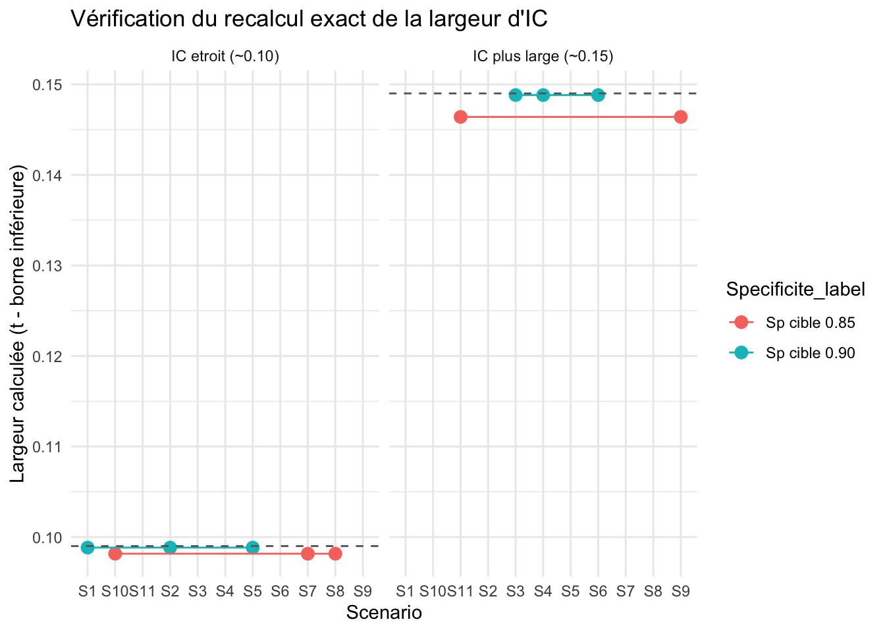
Interprétation. - Avec une spécificité cible de 0,90 et une largeur d’IC proche de 0,15, l’effectif requis peut descendre à 54 si la prévalence attendue est 0,50, ce qui est le scénario le plus proche de l’effectif observé. - Dès qu’on veut un IC plus étroit ou une spécificité cible plus élevée, l’effectif requis monte rapidement au-delà de la cohorte actuelle. - L’effectif analysé ici (53) est donc compatible avec une étude exploratoire / de précision modérée, mais reste court pour revendiquer des estimations très précises de spécificité, surtout test par test.
En pratique, le recalcul retrouve les ordres de grandeur de l’image: il faut environ 50 négatifs pour viser une spécificité de 0,90 avec une largeur proche de 0,10, contre 59 négatifs pour une spécificité de 0,85 avec la même exigence de précision.
À quoi sert concrètement cette justification d’effectif ? - Elle sert à juger si l’étude est capable d’estimer la spécificité avec une précision acceptable, et pas seulement à produire une valeur ponctuelle. - Elle montre que, dans cette cohorte, le point limitant est surtout le nombre de sujets négatifs, puisque la spécificité est calculée sur eux. - Elle permet donc de dire, en toutes lettres, que l’étude actuelle peut soutenir une première estimation de la spécificité, mais pas une estimation très précise pour tous les tests. - Elle aide enfin à planifier une cohorte de confirmation: si l’objectif est une spécificité autour de 0,90 avec une bonne borne inférieure, il faudra surtout augmenter le nombre de sujets non atteints, donc le nombre total inclus selon la prévalence attendue.
4.1 Exploration complémentaire par puissance
L’image répond à une logique de précision d’estimation. C’est différent d’une logique de puissance pour tester un contraste de proportions. Pour compléter le raisonnement, on peut aussi examiner des scénarios de puissance à 80% et 90%.
power_scenarios %>%
select(Contraste, Puissance, n_par_groupe) Contraste Puissance n_par_groupe
1 Sp 0.85 vs 0.60 0.8 48
2 Sp 0.90 vs 0.60 0.8 30
3 Sp 0.85 vs 0.75 0.8 248
4 Sp 0.90 vs 0.75 0.8 97
5 Sp 0.85 vs 0.60 0.9 64
6 Sp 0.90 vs 0.60 0.9 40
7 Sp 0.85 vs 0.75 0.9 332
8 Sp 0.90 vs 0.75 0.9 129ggplot(power_scenarios, aes(x = Contraste, y = n_par_groupe, fill = factor(Puissance))) +
geom_col(position = "dodge") +
theme_minimal() +
labs(
title = "Effectif requis selon des scénarios de puissance",
x = "Contraste de spécificité",
y = "n par groupe",
fill = "Puissance"
)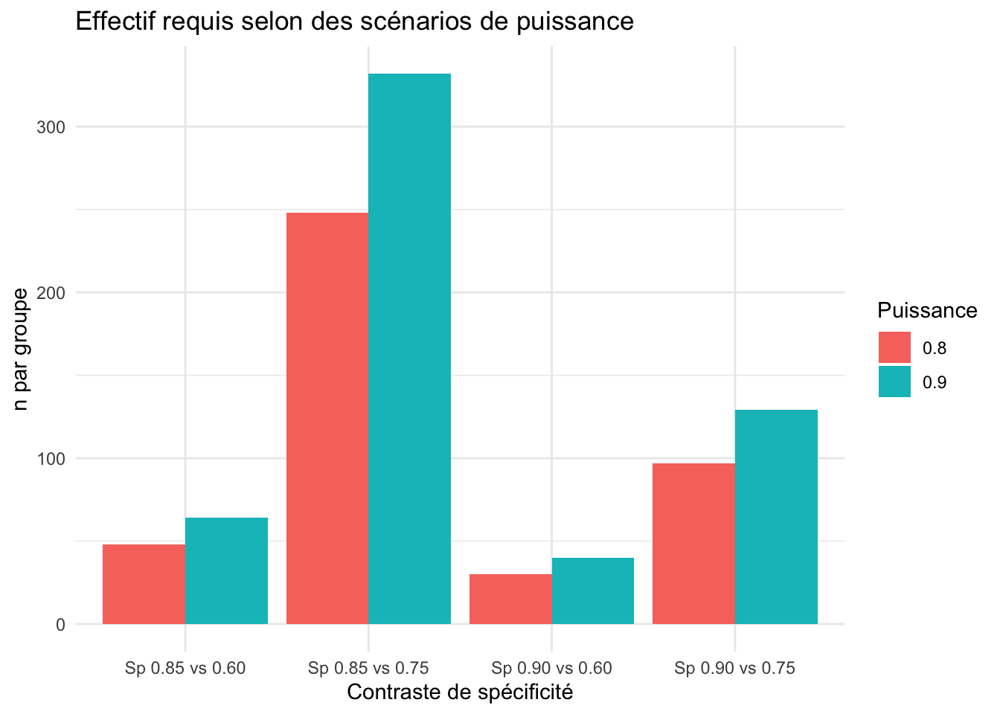
Cette seconde approche ne remplace pas le calcul issu de l’image; elle le complète. La première question est: “avec quelle précision estimer la spécificité ?”. La seconde est: “quelle taille faut-il pour détecter un écart donné entre deux hypothèses ?”. Les deux lectures sont utiles, mais elles ne répondent pas à la même question statistique.
5 Performance diagnostique principale
diag_primary_round Test N TP FN FP TN Se Sp VPP VPN LR+ LR- Youden AUC
1 U1 53 30 6 9 8 0.833 0.471 0.769 0.571 1.57 0.35 0.304 0.652
2 U2a 53 28 8 9 8 0.778 0.471 0.757 0.500 1.47 0.47 0.248 0.624
3 U2b 53 27 9 7 10 0.750 0.588 0.794 0.526 1.82 0.42 0.338 0.669
4 U3 53 13 23 7 10 0.361 0.588 0.650 0.303 0.88 1.09 -0.051 0.475
5 Scratch 50 9 25 0 16 0.265 1.000 1.000 0.390 Inf 0.74 0.265 0.632
p Fisher
1 0.0419
2 0.1080
3 0.0302
4 0.7680
5 0.04285.1 Tableaux de contingence
contingency_tab Test TP FN FP TN N
1 U1 30 6 9 8 53
2 U2a 28 8 9 8 53
3 U2b 27 9 7 10 53
4 U3 13 23 7 10 53
5 Scratch 9 25 0 16 50contingency_long <- contingency_tab %>%
pivot_longer(cols = c(TP, FN, FP, TN), names_to = "Cellule", values_to = "Effectif")
ggplot(contingency_long, aes(Test, Effectif, fill = Cellule)) +
geom_col(position = "stack") +
theme_minimal() +
labs(title = "Composition des tableaux 2x2 par test")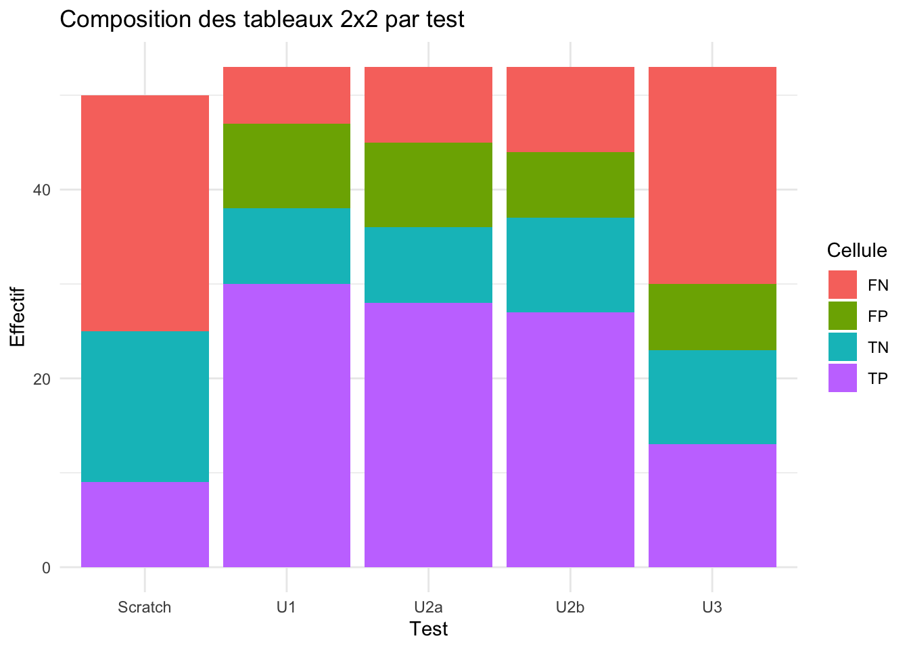
Ces tableaux 2x2 sont la base de toute l’analyse diagnostique. Ils montrent immédiatement que: - U1 et U2b ont le meilleur équilibre entre vrais positifs et faux positifs. - Scratch n’a aucun faux positif dans l’analyse principale, d’où sa spécificité de 100%, mais il ne détecte que 9 vrais positifs sur 34. - U3 produit peu de vrais positifs au regard du nombre de faux négatifs, ce qui explique sa faible sensibilité.
5.2 IC95% et précision des estimations
diag_precision_tab <- diag_primary %>%
transmute(
Test,
`Se [IC95%]` = paste0(fmt_num(Se, 3), " [", fmt_num(Se_low, 3), "; ", fmt_num(Se_high, 3), "]"),
`Sp [IC95%]` = paste0(fmt_num(Sp, 3), " [", fmt_num(Sp_low, 3), "; ", fmt_num(Sp_high, 3), "]"),
`VPP [IC95%]` = paste0(fmt_num(VPP, 3), " [", fmt_num(VPP_low, 3), "; ", fmt_num(VPP_high, 3), "]"),
`VPN [IC95%]` = paste0(fmt_num(VPN, 3), " [", fmt_num(VPN_low, 3), "; ", fmt_num(VPN_high, 3), "]"),
`Largeur IC Se` = round(Se_high - Se_low, 3),
`Largeur IC Sp` = round(Sp_high - Sp_low, 3)
)
diag_precision_tab Test Se [IC95%] Sp [IC95%] VPP [IC95%]
1 U1 0.833 [0.672; 0.936] 0.471 [0.230; 0.722] 0.769 [0.607; 0.889]
2 U2a 0.778 [0.608; 0.899] 0.471 [0.230; 0.722] 0.757 [0.588; 0.882]
3 U2b 0.750 [0.578; 0.879] 0.588 [0.329; 0.816] 0.794 [0.621; 0.913]
4 U3 0.361 [0.208; 0.538] 0.588 [0.329; 0.816] 0.650 [0.408; 0.846]
5 Scratch 0.265 [0.129; 0.444] 1.000 [0.794; 1.000] 1.000 [0.664; 1.000]
VPN [IC95%] Largeur IC Se Largeur IC Sp
1 0.571 [0.289; 0.823] 0.264 0.492
2 0.500 [0.247; 0.753] 0.290 0.492
3 0.526 [0.289; 0.756] 0.301 0.486
4 0.303 [0.156; 0.487] 0.330 0.486
5 0.390 [0.242; 0.555] 0.315 0.206diag_ci_plot <- bind_rows(
diag_primary %>% transmute(Test, Mesure = "Sensibilité", est = Se, low = Se_low, high = Se_high),
diag_primary %>% transmute(Test, Mesure = "Spécificité", est = Sp, low = Sp_low, high = Sp_high)
)
ggplot(diag_ci_plot, aes(Test, est, color = Mesure)) +
geom_point(position = position_dodge(width = 0.4), size = 2.5) +
geom_errorbar(aes(ymin = low, ymax = high), position = position_dodge(width = 0.4), width = 0.2) +
theme_minimal() +
labs(title = "Sensibilité et spécificité avec IC95%")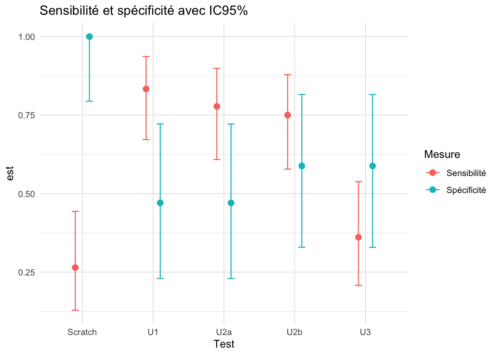
Interprétation de la précision. - Les estimations de sensibilité sont globalement plus stables que celles de spécificité, car la cohorte contient davantage de cas positifs que négatifs. - Les IC de spécificité restent larges, ce qui impose de la prudence avant de hiérarchiser trop finement les tests sur ce seul critère. - Le cas de Scratch est typique: une spécificité observée à 100% est impressionnante, mais sa précision réelle est limitée par le petit nombre de négatifs et l’absence de faux positifs observés.
5.3 Analyse de sensibilité sur les cas douteux
diag_sensitivity_round Test N Se Sp VPP VPN LR+ LR- Youden AUC
1 U1 50 0.833 0.571 0.833 0.571 1.94 0.29 0.405 0.702
2 U2a 50 0.778 0.571 0.824 0.500 1.81 0.39 0.349 0.675
3 U2b 50 0.750 0.643 0.844 0.500 2.10 0.39 0.393 0.696
4 U3 50 0.361 0.714 0.765 0.303 1.26 0.89 0.075 0.538
5 Scratch 48 0.265 1.000 1.000 0.359 Inf 0.74 0.265 0.632ggplot(filter(diag_compare, Mesure %in% c("Se", "Sp", "Youden")), aes(Test, Valeur, fill = Analyse)) +
geom_col(position = "dodge") +
facet_wrap(~ Mesure, scales = "free_y") +
theme_minimal() +
labs(title = "Analyse principale vs sensibilité (cas douteux recodés négatifs)")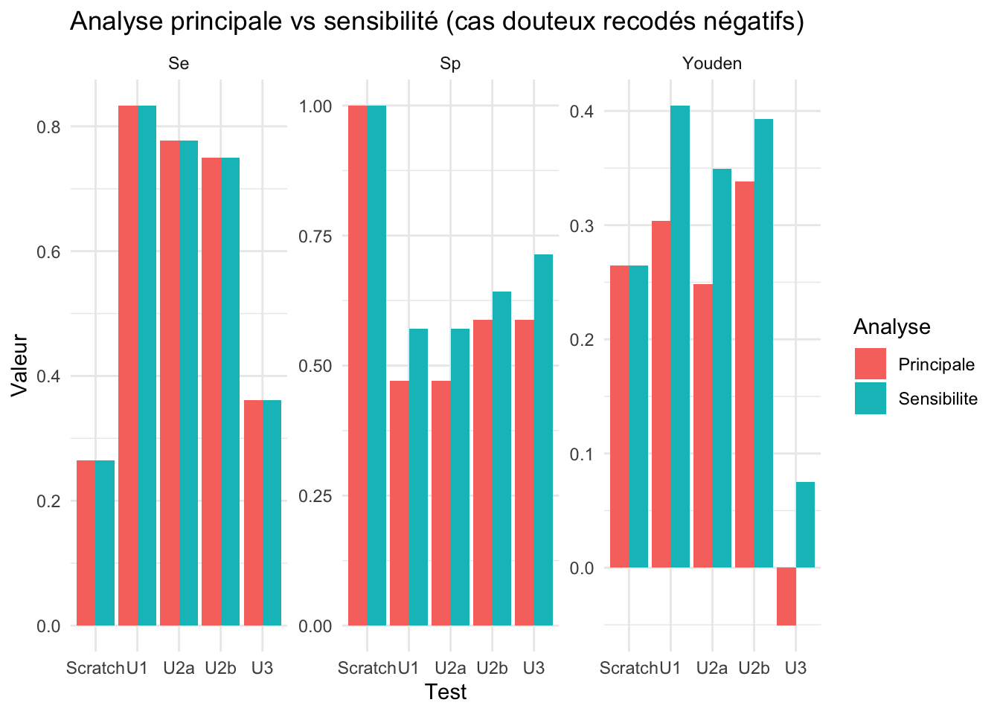
Le tableau du haut correspond à l’analyse principale retenue dans le rapport: les 3 gold standards douteux sont recodés négatifs. Le tableau de sensibilité ci-dessus montre ce que donnerait une stratégie alternative plus restrictive, à savoir l’exclusion des cas Douteux.
Lecture pratique. - Les conclusions qualitatives changent peu entre les deux stratégies: U1 et U2b restent les tests les plus utiles, et U3 reste faible. - Le fait que les résultats restent globalement cohérents renforce la robustesse du message principal, tout en montrant que le choix de traiter les Douteux comme négatifs doit être dit clairement au lecteur.
Interprétation détaillée des résultats principaux. - U1 est le test le plus sensible parmi les tests isolés: Se 83.3% [67.2 ; 93.6], avec un LR− à 0.35. Il est donc le plus utile des tests isolés pour diminuer la probabilité de NCB quand il est négatif, sans être assez fort pour exclure à lui seul. - U2a reste proche de U1, mais avec un compromis légèrement moins bon: Se 77.8%, Sp 47.1%, Youden 0.248. - U2b est le meilleur compromis global en analyse isolée: Sp 58.8%, LR+ 1.82, Youden 0.338, AUC 0.669. C’est donc l’ULNT le plus équilibré dans cet échantillon. - U3 est clairement le moins performant: Se 36.1%, LR− 1.09, Youden -0.051. Sa faible sensibilité le rend peu utile pour le dépistage et son LR+ n’est pas assez élevé pour une confirmation robuste. - Scratch est extrêmement spécifique dans l’analyse principale: Sp 100.0% et VPP 100.0%. En revanche sa sensibilité n’est que de 26.5%. Cliniquement, un Scratch positif est compatible avec une forte augmentation de probabilité de NCB, mais un Scratch négatif n’écarte pas la pathologie. Son LR+ est théoriquement très élevé, mais son intervalle de confiance reste très large car aucun faux positif n’est observé.
Lecture synthétique. Le test le plus sensible est U1 (Se 83.3%, LR− 0.35).
Le test le plus spécifique est Scratch (Sp 100.0%, LR+ Inf).
Le meilleur compromis global (Youden maximal) est U2b (Youden 0.338).
Validation des conclusions. Le message général reste stable dans l’analyse de sensibilité: U1/U2b restent les ULNT les plus utiles et U3 reste faible. Cela renforce la robustesse qualitative de la conclusion malgré les 3 cas Douteux.
perf_long <- diag_primary %>%
select(Test, Se, Sp, VPP, VPN, LRp, LRn, Youden) %>%
pivot_longer(cols = c(Se, Sp, VPP, VPN, LRp, LRn, Youden), names_to = "Mesure", values_to = "Valeur")
ggplot(perf_long, aes(Test, Valeur, fill = Mesure)) + geom_col(position = "dodge") + theme_minimal() + labs(title = "Performances diagnostiques principales")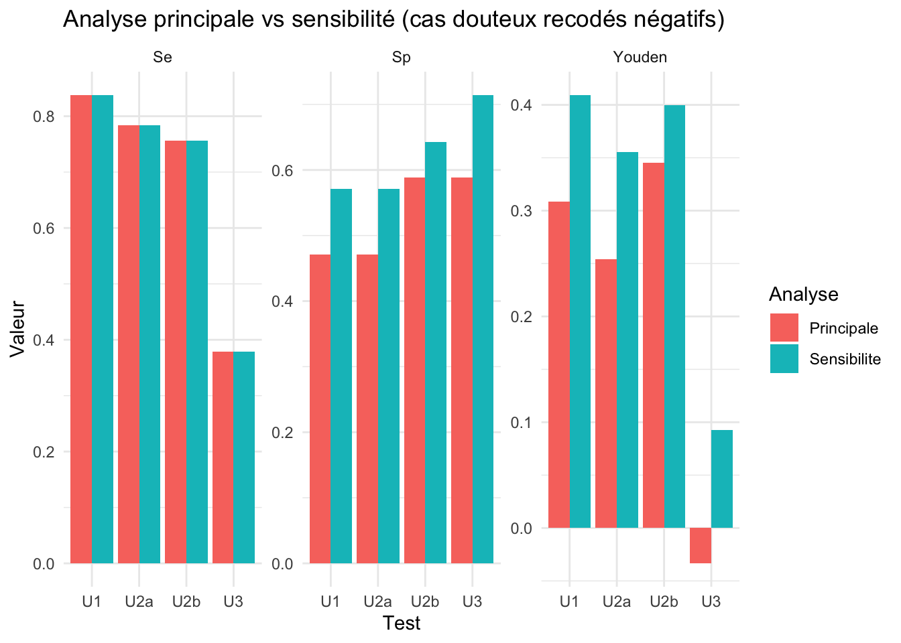
6 Combinaisons de tests positifs ULNT
combo_round Seuil N Se Sp VPP VPN LR+ LR- Youden AUC
1 >=1 positifs 53 0.944 0.412 0.773 0.778 1.61 0.13 0.356 0.678
2 >=2 positifs 53 0.861 0.471 0.775 0.615 1.63 0.30 0.332 0.666
3 >=3 positifs 53 0.667 0.529 0.750 0.429 1.42 0.63 0.196 0.598
4 >=4 positifs 53 0.250 0.706 0.643 0.308 0.85 1.06 -0.044 0.478Quand on combine les ULNT, le meilleur seuil pour le dépistage est >=1 positifs: Se 94.4%, LR− 0.13, Youden 0.356.
Le meilleur seuil pour le compromis global est >=1 positifs: Se 94.4%, Sp 41.2%, Youden 0.356.
Interprétation clinique. - Le seuil >=1 positif maximise la sensibilité (94.4%) et donne le meilleur LR− (0.13), ce qui en fait la meilleure règle d’exclusion parmi les combinaisons. - Le seuil >=2 positifs garde une sensibilité élevée (86.1%) avec une spécificité un peu meilleure (47.1%); c’est le compromis le plus réaliste si l’on veut éviter un excès de faux positifs. - Les seuils >=3 et surtout 4/4 perdent trop de sensibilité pour un gain limité en spécificité dans cette cohorte.
combo_long <- combo_primary %>%
select(Test, Se, Sp) %>%
pivot_longer(cols = c(Se, Sp), names_to = "Mesure", values_to = "Valeur")
ggplot(combo_long, aes(Test, Valeur, fill = Mesure)) + geom_col(position = "dodge") + ylim(0, 1) + theme_minimal() + labs(title = "Sensibilité et spécificité des combinaisons ULNT")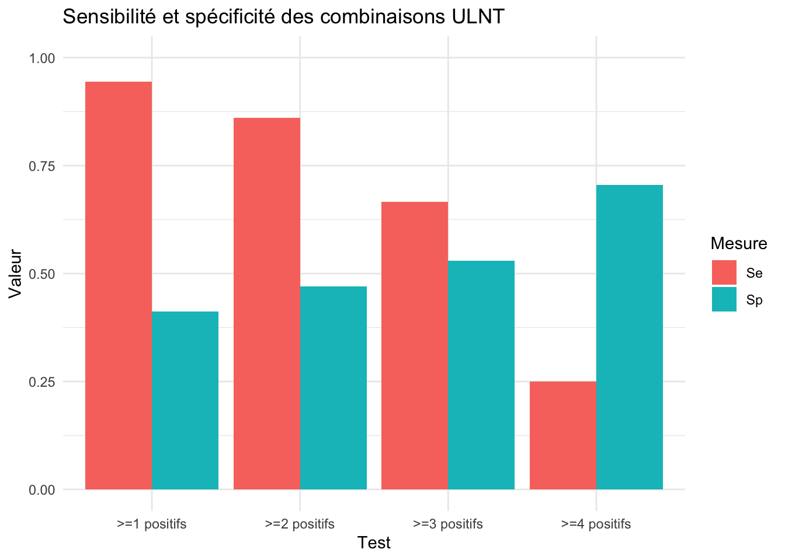
7 Taux de positivité selon niveau métamérique
niv_valid# A tibble: 25 × 5
Niveau Test N Positifs Taux
<ord> <chr> <int> <int> <dbl>
1 C4 Sc_E1 1 0 0
2 C4 U1_E1 1 0 0
3 C4 U2a_E1 1 0 0
4 C4 U2b_E1 1 0 0
5 C4 U3_E1 1 0 0
6 C5 Sc_E1 1 0 0
7 C5 U1_E1 1 0 0
8 C5 U2a_E1 1 0 0
9 C5 U2b_E1 1 0 0
10 C5 U3_E1 1 0 0
# ℹ 15 more rowsInterprétation. Cette section est strictement descriptive. Les données par niveau métamérique sont trop pauvres pour une conclusion statistique valide: - C4, C5 et C7 n’ont qu’un seul dossier chacun. - C8 n’a que 8 dossiers exploitables pour U1. - NA dossiers n’ont aucun niveau renseigné.
La seule lecture raisonnable est exploratoire: au niveau C6, U1 et U2a paraissent les plus souvent positifs (92.3% et 84.6%), tandis que Scratch reste peu souvent positif (15.4%). Mais ces chiffres ne doivent pas être surinterprétés.
ggplot(niv_valid, aes(Niveau, Taux, fill = Test)) + geom_col(position = "dodge") + ylim(0, 1) + theme_minimal() + labs(title = "Taux de positivité par niveau métamérique")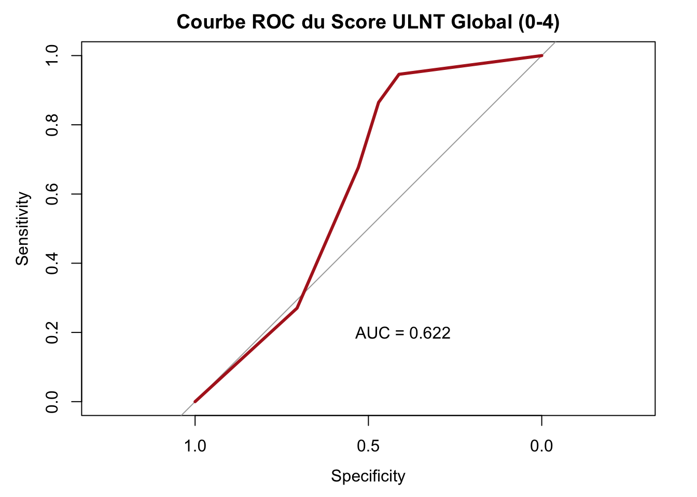
ggplot(niv_valid, aes(Niveau, Taux, color = Test, group = Test)) + geom_line() + geom_point() + ylim(0, 1) + theme_minimal() + labs(title = "Courbes descriptives par niveau")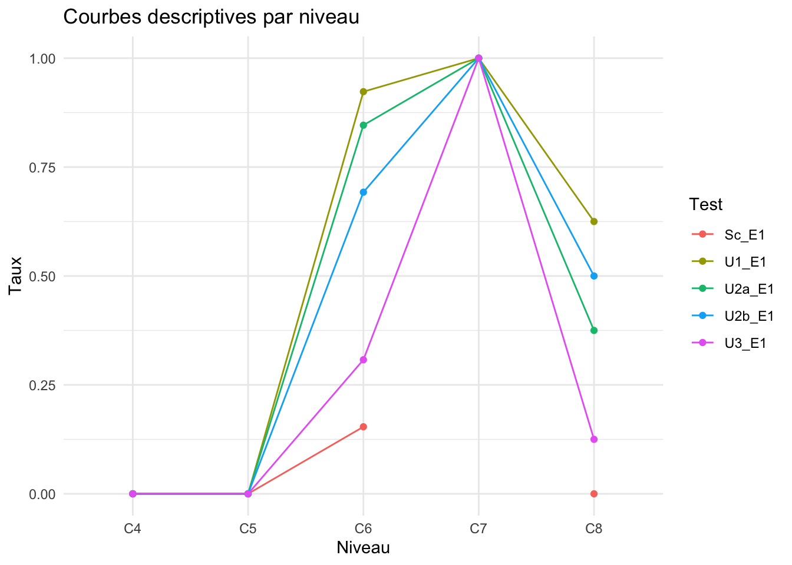
8 Reproductibilité inter-observateur
kappa_round Test N Accord Kappa IC95% bas IC95% haut Interpretation
1 U1 52 0.865 0.611 0.353 0.869 substantielle
2 U2a 52 0.808 0.532 0.279 0.786 moderee
3 U2b 52 0.788 0.512 0.261 0.763 moderee
4 U3 52 0.808 0.607 0.389 0.825 substantielle
5 Scratch 49 0.816 0.455 0.153 0.757 modereeInterprétation détaillée. - U1 présente la meilleure reproductibilité: kappa 0.611 [0.353 ; 0.869], accord brut 86.5%. - U2a et U2b ont une reproductibilité modérée, avec des kappas autour de 0,5. - U3 revient à un niveau substantiel (0.607), meilleur qu’attendu au regard de sa faible performance diagnostique: un test peut être reproductible sans être très discriminant. - Scratch a la reproductibilité la plus faible du groupe (0.455), tout en restant dans une zone modérée.
En pratique, les manœuvres semblent donc globalement reproductibles, mais la solidité n’est pas homogène entre tests. La reproductibilité n’est pas le principal facteur limitant ici; c’est plutôt la performance diagnostique elle-même.
ggplot(kappa_tab, aes(Test, Kappa, fill = Test)) + geom_col() + theme_minimal() + labs(title = "Kappa inter-observateur")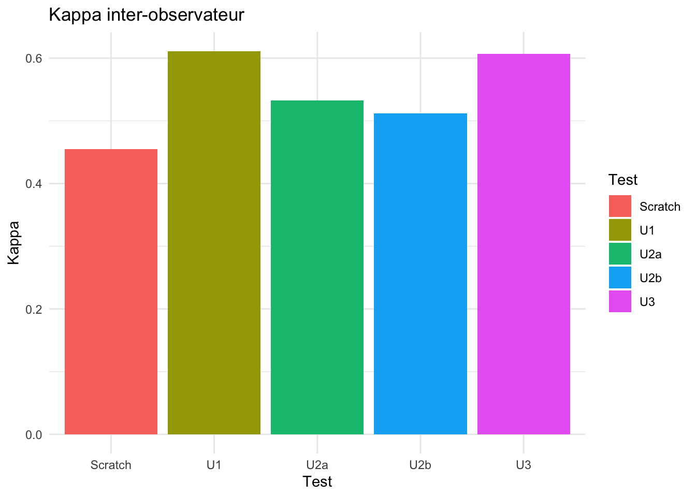
9 ROC isolées et AUC
auc_tab Test AUC IC95% bas IC95% haut
1 U2b 0.669 0.529 0.809
2 U1 0.652 0.515 0.789
3 Scratch 0.632 0.557 0.708
4 U2a 0.624 0.484 0.765
5 U3 0.475 0.330 0.619Les AUC ont été recalculées sur l’analyse principale, où les Douteux sont reclassés Negatif. La meilleure AUC est celle de U2b à 0.669 [0.529 ; 0.809].
Interprétation. - Les AUC sont toutes comprises entre environ 0,54 et 0,70: cela correspond à une discrimination faible à modérée. - U2b (0.669) et U1 (0.652) dominent légèrement les autres tests. - U3 (0.475) est proche de 0,5, donc proche d’un test peu informatif.
Point de validité important. Comme chaque prédicteur est binaire (positif/négatif), la ROC n’ajoute pas de nouveau seuil clinique; elle résume essentiellement l’information déjà contenue dans la sensibilité et la spécificité. Elle est donc conservée comme résumé visuel, mais l’interprétation principale doit rester fondée sur Se/Sp/LR.
plot(roc_objects$U1, col = "#1b9e77", main = "ROC superposées", legacy.axes = TRUE)
plot(roc_objects$U2a, col = "#d95f02", add = TRUE)
plot(roc_objects$U2b, col = "#7570b3", add = TRUE)
plot(roc_objects$U3, col = "#e7298a", add = TRUE)
plot(roc_objects$Scratch, col = "#66a61e", add = TRUE)
abline(0, 1, lty = 2)
legend("bottomright", legend = c(
paste0("U1 AUC=", fmt_num(diag_primary$AUC[diag_primary$Test=="U1"], 3)),
paste0("U2a AUC=", fmt_num(diag_primary$AUC[diag_primary$Test=="U2a"], 3)),
paste0("U2b AUC=", fmt_num(diag_primary$AUC[diag_primary$Test=="U2b"], 3)),
paste0("U3 AUC=", fmt_num(diag_primary$AUC[diag_primary$Test=="U3"], 3)),
paste0("Scratch AUC=", fmt_num(diag_primary$AUC[diag_primary$Test=="Scratch"], 3))
), col = c("#1b9e77", "#d95f02", "#7570b3", "#e7298a", "#66a61e"), lwd = 2)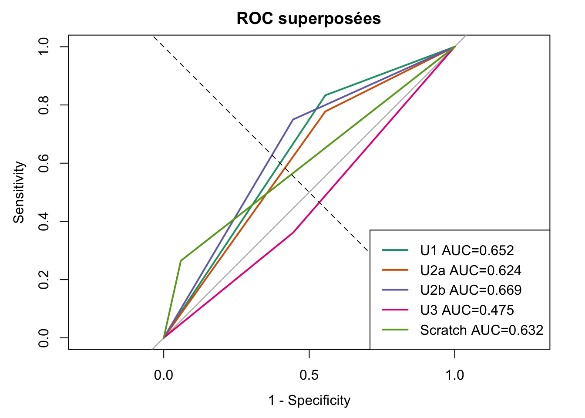
10 Corrélation entre tests
round(cor_mat, 3) U1 U2a U2b U3 Scratch Gold
U1 1.000 0.542 0.361 0.385 0.193 0.322
U2a 0.542 1.000 0.541 0.518 0.102 0.253
U2b 0.361 0.541 1.000 0.190 0.278 0.329
U3 0.385 0.518 0.190 1.000 -0.074 -0.049
Scratch 0.193 0.102 0.278 -0.074 1.000 0.321
Gold 0.322 0.253 0.329 -0.049 0.321 1.000Les coefficients ci-dessus sont des corrélations sur variables binaires, donc à lire comme corrélations phi descriptives.
Interprétation. - Les ULNT sont corrélés entre eux de façon modérée, surtout U1 avec U2a (0.542) et U2a avec U2b (0.541), ce qui suggère une information partiellement redondante. - Vis-à-vis du gold standard, les corrélations les plus fortes sont U1 (0.322) puis U2b (0.329). - U3 n’est que très faiblement corrélé au gold standard (-0.049), ce qui concorde avec sa faible performance diagnostique.
corrplot(cor_mat, method = "color", type = "upper", addCoef.col = "black")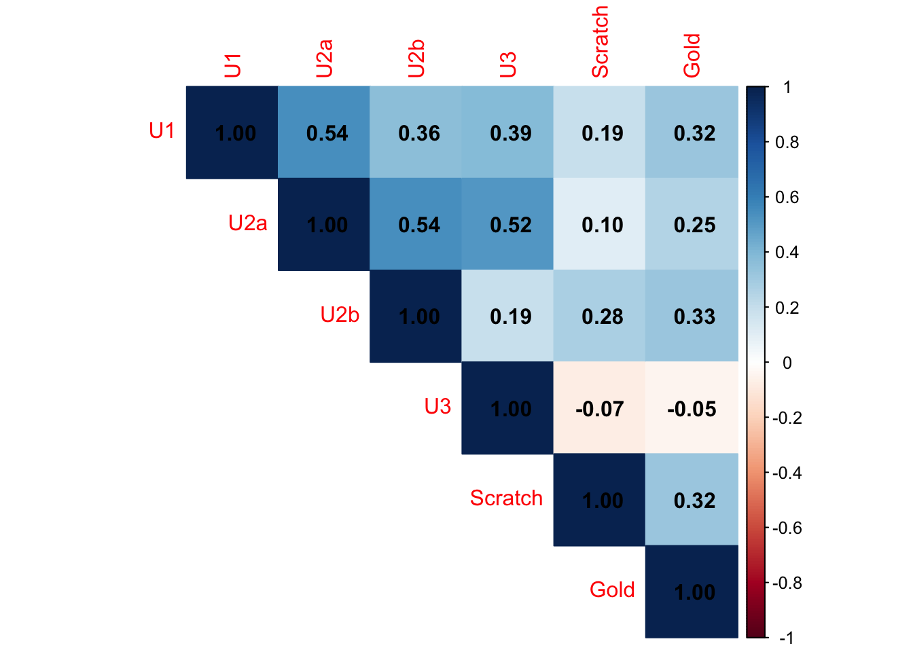
11 Probabilités post-test
post_test Test Probabilite de NCB si test positif Probabilite de NCB si test negatif
1 U1 0.769 0.429
2 U2a 0.757 0.500
3 U2b 0.794 0.474
4 U3 0.650 0.697
5 Scratch 1.000 0.610ggplot(post_test_long, aes(Test, Probabilite, fill = Situation)) +
geom_col(position = "dodge") +
theme_minimal() +
labs(title = "Probabilités post-test observées", y = "Probabilité")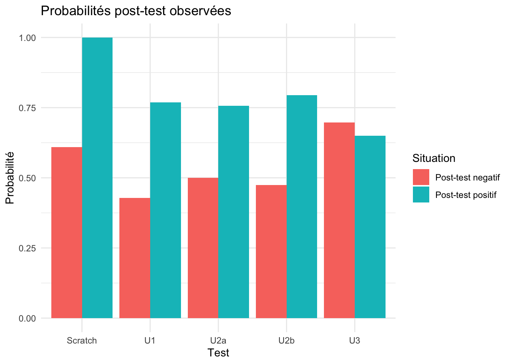
Les probabilités post-test ci-dessus sont directement interprétables: - si le test est positif, la probabilité observée de NCB correspond à la VPP; - si le test est négatif, la probabilité résiduelle de NCB vaut 1 - VPN.
En particulier, après un test négatif, la probabilité résiduelle de NCB reste de 42.9% pour U1 et de 47.4% pour U2b: cela montre qu’aucun test isolé négatif n’exclut complètement la maladie dans cette cohorte.
12 NNT exploratoire: définition, calcul, limites
nnt_exploratory %>%
mutate(
Pretest = round(Pretest, 3),
VPP = round(VPP, 3),
ARR_exploratoire = round(ARR_exploratoire, 3),
NNT_exploratoire = round(NNT_exploratoire, 2)
) Test Pretest VPP ARR_exploratoire NNT_exploratoire
1 U1 0.679 0.769 0.090 11.11
2 U2a 0.679 0.757 0.078 12.90
3 U2b 0.679 0.794 0.115 8.71
4 U3 0.679 0.650 -0.029 NA
5 Scratch 0.679 1.000 0.321 3.12ggplot(nnt_exploratory, aes(Test, NNT_exploratoire, fill = Test)) +
geom_col() +
theme_minimal() +
labs(
title = "NNT exploratoire dérivé du gain de probabilité post-test",
y = "NNT exploratoire"
)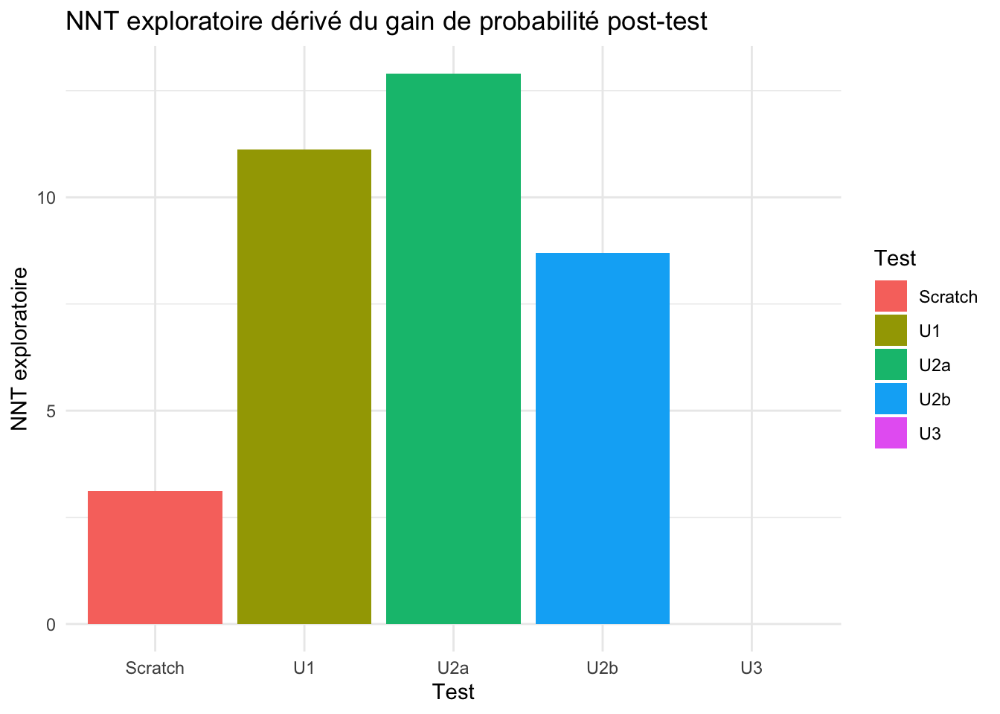
On peut réintégrer ici le NNT exploratoire mentionné par la statisticienne, à condition d’être très clair sur son statut.
Définition utilisée ici. On définit un gain absolu exploratoire de probabilité diagnostique comme:
[ ARR_{exploratoire} = VPP - ]
et donc:
[ NNT_{exploratoire} = ]
Autrement dit, cet indicateur cherche à traduire en termes cliniques combien de tests positifs “sont nécessaires” pour obtenir un diagnostic positif additionnel par rapport à la probabilité pré-test de la cohorte.
Interprétation. - Plus le NNT exploratoire est bas, plus un test positif apporte un gain de probabilité diagnostique au-delà de la prévalence initiale. - Dans cette cohorte, les meilleurs profils exploratoires sont U1 et U2b, ce qui est cohérent avec les autres résultats du rapport.
Limites. - Ce NNT n’est pas un indicateur standard de validité diagnostique. - Il dépend fortement de la prévalence de la cohorte. - Il ne doit pas remplacer Se/Sp/LR/VPP/VPN dans la conclusion scientifique. - Il est donc présenté comme un complément clinique exploratoire, pas comme un résultat principal.
13 Dimensionnement / puissance
power_tab Hypothese n.par.groupe.requis
1 Sp 0.90 vs 0.75 97
2 Sp 0.85 vs 0.60 48Les sorties pwr.2p.test indiquent qu’il faudrait environ sujets par groupe pour détecter un écart de spécificité de 0,90 versus 0,75, et sujets par groupe pour 0,85 versus 0,60.
Interprétation correcte. Cette section est utile pour planifier une étude de confirmation, mais ne valide pas a posteriori l’étude présente. Pour juger la précision de l’étude actuelle, les intervalles de confiance des performances observées sont plus informatifs que la puissance post hoc.
14 Vérification de validité statistique
validity_tab Point
1 Population d'analyse principale
2 Gestion des Gold_Standard douteux
3 Scratch test
4 Analyse par niveau metamerique
5 ROC
6 NNT
7 Puissance
Constat
1 53 dossiers avec gold standard binaire interpretable sur 54
2 3 dossiers Douteux: tous recodes Negatif dans l'analyse principale et annonces explicitement comme tels
3 3 valeurs manquantes/NT pour E1
4 30 niveaux manquants; C4, C5 et C7 n=1 chacun
5 Predicteurs binaires: l'AUC est descriptive et redondante avec Se/Sp
6 Indicateur exploratoire non standard en diagnostique, a presenter separement du noyau principal
7 Section conservee comme aide de planification, pas comme validation post hocBilan critique. - Le choix de traiter les 3 gold standards Douteux comme Negatif doit être annoncé clairement, car il influence certaines estimations et peut modifier légèrement les AUC et les indices dérivés. - L’analyse de sensibilité par exclusion des Douteux montre toutefois que le signal principal (U1/U2b utiles, U3 faible) reste globalement stable. - La section par niveau métamérique est incomplète et trop sparse pour soutenir autre chose qu’une description. - Les AUC sont acceptables comme résumé, mais secondaires par rapport aux indices diagnostiques classiques, car les tests sont binaires. - Le “NNT” ne doit pas faire partie de la conclusion scientifique d’une étude diagnostique; il a donc été remplacé par des probabilités post-test. - Les conclusions cliniques restent fragiles en spécificité, car il n’y a que 14 négatifs dans l’analyse principale; cela élargit fortement les IC des spécificités et des LR, surtout pour Scratch.
15 Conclusion intégrée
Dans cette cohorte, U1 et U2b sont les tests isolés les plus utiles. U1 est le plus sensible et U2b offre le meilleur compromis global. Scratch est surtout un test de confirmation quand il est positif, mais sa faible sensibilité l’empêche d’être un bon test d’exclusion. U3 apparaît peu performant.
Pour les combinaisons, au moins un ULNT positif est la meilleure stratégie de dépistage et au moins deux ULNT positifs offre le meilleur équilibre pratique. En revanche, les conclusions par niveau métamérique sont trop peu robustes pour être retenues analytiquement.
Sur le plan méthodologique, le document est désormais plus valide statistiquement parce qu’il: - sépare analyse principale et analyse de sensibilité pour les Douteux; - rapporte les résultats extraits et leurs intervalles de confiance; - cadre le NNT comme indicateur exploratoire distinct du noyau principal; - explicite les limites dues aux effectifs, aux données manquantes et à la nature binaire des tests.